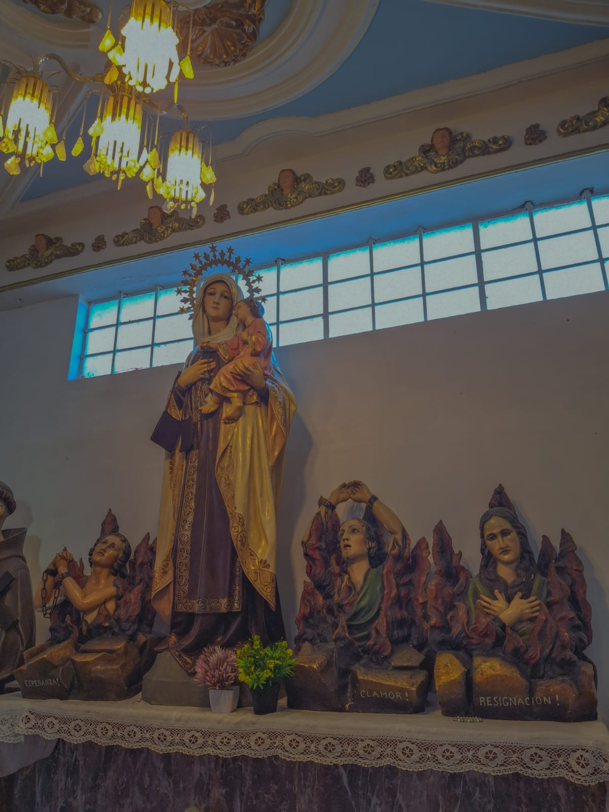
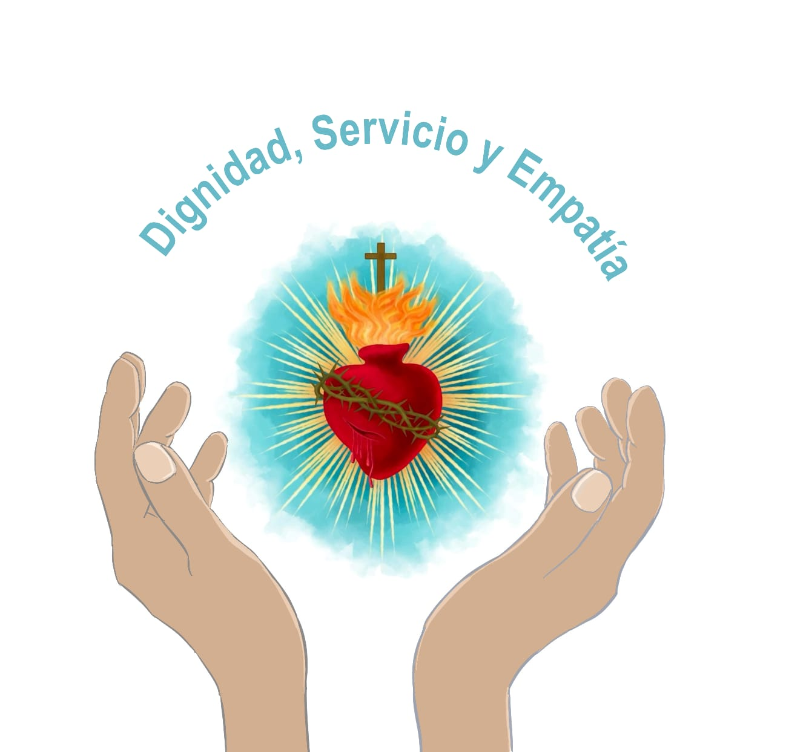
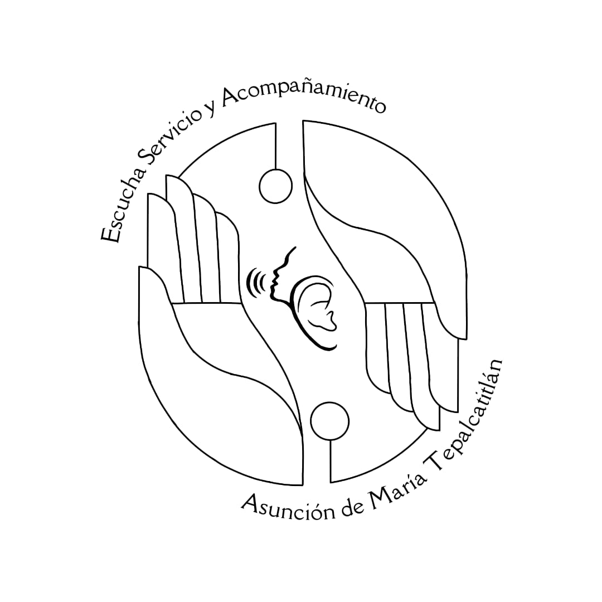

Grupos Parroquiales
Adoración Nocturna
Catequesis

Cofradía de la Virgen del Carmen
Coro Asunción de María
Coro Familiar Asunción de María
Coro SOS Vamos a cantar
Encuentro Matrimonial
Escuela de Pastoral
Evangelizadores Escénicos
Fuerzas Básicas AM
Grupo Scouts 9 Asgard
Hermanos en Cristo
Jornadas Juveniles Kuhtli
Liturgia
Ministros de la Eucaristía
Monaguillos
Orden Franciscana Seglar
Pláticas Pre Bautismales
Pastoral Infantil

Pastoral Social

Servicio de Apoyo
Servicio Psicológico